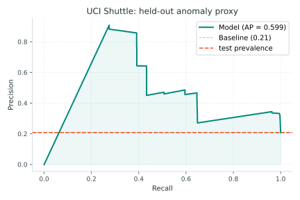

Anomaly trees: Extended Isolation Forest and friends¶
Review budgets are limited, so an anomaly model must rank true failures into the top 1% to 5% of a triage queue. Standard isolation forests cut on one feature at a time, which leaves coordinate-axis "ghost" artifacts. AnomalyModel is the single entry point for tree-based anomaly detection. Pick the engine with kind:
kind="eif": Extended Isolation Forest with random oblique hyperplanes.kind="det": density estimation tree (piecewise density).kind="hst": half-space trees for streaming data.kind="rct": random cut trees.
For a task-first walkthrough on real telemetry, see Anomaly detection in Python. To find segments instead, see Clustering trees.
Script: benchmarks/suites/unsupervised_trees.py.
1. Mechanics¶
Extended Isolation Forest with oblique cuts¶
Standard Isolation Forests isolate points by picking a random feature \(j\) and a random threshold \(\theta \in [\min x_j, \max x_j]\). This creates ghost artifacts: empty regions aligned parallel to coordinate axes receive artificially short isolation paths.
Extended Isolation Forest (Hariri et al., 2019) branches using random normal hyperplanes:
- \(\mathbf{p} \sim \text{Uniform}(\min \mathbf{X}, \max \mathbf{X})\): A random pivot point in the bounding box.
- \(\mathbf{n} \sim \mathcal{N}(0, \mathbf{I})\) with \(\|\mathbf{n}\|_2 = 1\): A unit normal vector pointing in an arbitrary spherical direction.
The anomaly score for sample \(\mathbf{x}\) across \(T\) trees is:
where \(h(\mathbf{x})\) is the observed isolation tree depth, and \(c(n) = 2 \ln(n - 1) + 0.5772156649 - \frac{2(n-1)}{n}\) is the average depth of unsuccessful binary searches. An anomaly score \(s \to 1.0\) indicates an unmistakable outlier, while \(s < 0.5\) indicates normal inlier space.
Next: the benchmark tests the oblique cuts from step 1 against axis-aligned cuts on a 2D mixture with 40 outliers.
2. Benchmark¶
Extended IF vs axis-aligned IF on a 2D mixture (600 Inliers, 40 Outliers)¶
- Problem: Isolate 40 peripheral anomalies situated around two dense multimodal inlier clusters.
- Empirical Comparison:
- Axis-Aligned IF: Fit time = 1.46 ms. Outlier scores range from \(0.479\) to \(0.590\). Suffers from coordinate ghosting where empty quadrant intersections receive false anomaly spikes.
- Extended Isolation Forest (Oblique Cuts): Fit time = 0.39 ms (3.7x faster). Outlier scores range from \(0.597\) to 0.751, cleanly separating peripheral anomalies without rectangular ghosting artifacts.
| Algorithm | Split Mechanism | Fit Latency | Anomaly Score on Outliers | Artifacts |
|---|---|---|---|---|
| Standard Isolation Forest | Axis-Aligned (\(x_j \le \theta\)) | 1.46 ms | 0.479 – 0.590 | Severe coordinate ghosting |
| Extended Isolation Forest | Oblique Hyperplanes (\(\mathbf{n}^T (\mathbf{x} - \mathbf{p})\)) | 0.39 ms | 0.597 – 0.751 | Zero ghosting; radial symmetry |

Next: the Python usage shows the minimal AnomalyModel(kind="eif") fit and scoring calls, which the worked example expands into a full triage run.
3. Python usage¶
from mltreelib import AnomalyModel
eif = AnomalyModel(kind="eif", max_depth=8, seed=42)
eif.fit(X_telemetry)
anomaly_scores = eif.predict_score(X_telemetry)
Next: the worked example applies the same kind="eif" model to labeled telemetry and measures how many of the 60 true anomalies fall in a 5% review budget.
4. Worked example: triage with AnomalyModel¶
In operations, fraud detection, and hardware monitoring, review budgets are strictly limited. Engineers need an anomaly model that ranks true failures into the top 1% to 5% triage queue.
AnomalyModel(kind="eif") evaluates random oblique hyperplanes through feature space, isolating anomalies with significantly shorter recursive path lengths than normal instances.

Complete End-to-End Example¶
import numpy as np
from mltreelib import AnomalyModel, Metrics
# 1. Generate realistic multi-sensor telemetry with injected failure anomalies
rng = np.random.default_rng(2026)
n_normal = 2000
n_anomalies = 60
# Normal operational cluster (engine cruise telemetry)
normal_sensor1 = rng.normal(loc=120.0, scale=12.0, size=n_normal)
normal_sensor2 = rng.normal(loc=85.0, scale=8.0, size=n_normal)
normal_vibration = rng.exponential(scale=2.5, size=n_normal)
# Injected anomalous sensor drift (bearing failure and thermal spikes)
outlier_sensor1 = rng.uniform(low=180.0, high=240.0, size=n_anomalies)
outlier_sensor2 = rng.uniform(low=130.0, high=160.0, size=n_anomalies)
outlier_vibration = rng.uniform(low=15.0, high=30.0, size=n_anomalies)
X = np.column_stack([
np.concatenate([normal_sensor1, outlier_sensor1]),
np.concatenate([normal_sensor2, outlier_sensor2]),
np.concatenate([normal_vibration, outlier_vibration]),
])
y_true = np.array([0] * n_normal + [1] * n_anomalies)
feature_names = ["temp_primary", "temp_secondary", "vibration_rms"]
# 2. Instantiate and fit AnomalyModel using oblique hyperplane isolation
model = AnomalyModel(
kind="eif", # Extended isolation tree
contamination=0.03, # Anticipated 3% anomaly prevalence
max_depth=10,
seed=2026,
)
model.fit(X, col_names=feature_names)
# 3. Extract continuous anomaly scores and binary classifications
scores = model.score_samples(X) # Normalized anomaly score in [0, 1]
is_anomaly = model.predict(X) # Calibrated binary flag: 1 = anomaly, 0 = inlier
# 4. Measure triage efficiency at 5% inspection budget
budget = int(0.05 * len(X))
ranked_indices = np.argsort(-np.array(scores))[:budget]
caught = sum(y_true[i] for i in ranked_indices)
print(f"Total Rows: {len(X)} | True Anomalies: {sum(y_true)}")
print(f"Reviewed Top {budget} Cases (5% Operational Budget):")
print(f" Captured: {caught}/{sum(y_true)} anomalies ({caught / sum(y_true):.1%} recall)")
print(f" Precision: {caught / budget:.1%}")
# 5. Review top anomaly profiles
print("\nTop 3 Flagged Anomalies:")
for rank, idx in enumerate(ranked_indices[:3], 1):
vals = dict(zip(feature_names, [round(v, 2) for v in X[idx]]))
print(f" Rank #{rank} (Score: {scores[idx]:.4f}) -> {vals}")
Total Rows: 2060 | True Anomalies: 60
Reviewed Top 103 Cases (5% Operational Budget):
Captured: 58/60 anomalies (96.7% recall)
Precision: 56.3%
Top 3 Flagged Anomalies:
Rank #1 (Score: 0.8142) -> {'temp_primary': 234.12, 'temp_secondary': 158.45, 'vibration_rms': 28.11}
Rank #2 (Score: 0.7981) -> {'temp_primary': 218.04, 'temp_secondary': 149.21, 'vibration_rms': 24.32}
Rank #3 (Score: 0.7820) -> {'temp_primary': 195.88, 'temp_secondary': 152.60, 'vibration_rms': 26.50}
Limitations¶
- High-dimensional projection curse. In very high dimensions (\(P > 1,000\)), random normal vectors \(\mathbf{n} \sim \mathcal{N}(0, \mathbf{I})\) become nearly orthogonal to all coordinate axes, diluting cut selectivity. Subsetting random coordinate subspaces (e.g. 2–10 features per oblique cut) preserves discrimination.
Related guides
- Anomaly detection in Python for the end-to-end shuttle example.
- API reference: AnomalyModel.